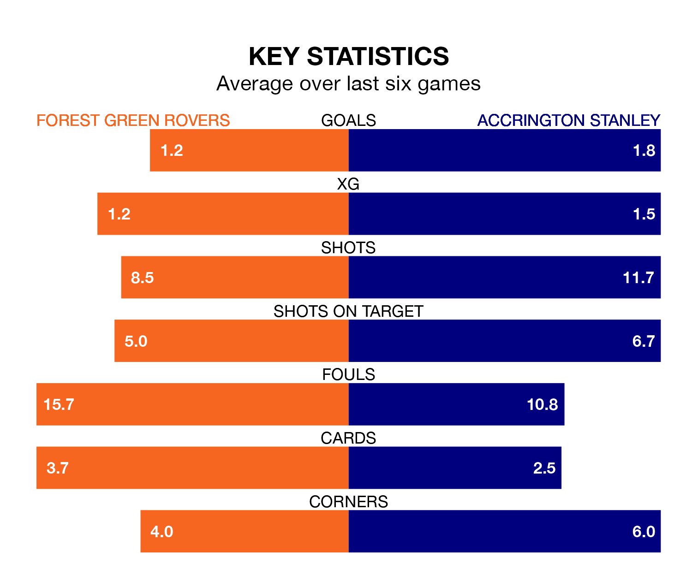

Forest Green Rovers face Accrington Stanley at the Bolt New Lawn on Saturday looking to secure a first win in 13 EFL League Two games.
The Green have lost six and drawn six matches since they last earned three points – against Crawley Town on October 28.
They face an Accrington side who have won three and drawn three over that time.
Forest Green are 23rd in the table after 27 games, of which they have won four and drawn seven, earning 19 points.
Accrington are 11 places ahead of Rovers in 12th, with 11 wins and five draws putting them on 38 points.
With 27 goals in 27 games so far this season, the Green are the league's second-lowest scorers with 1.0 goals per game. And they are conceding more than average, letting in 49 goals at a rate of 1.8 per game.
Stanley, meanwhile, are average scorers, with 1.5 goals per game. They have conceded 1.4 goals per game.
In the last three years, Forest Green and Accrington have played each other on three occasions. Forest Green won one of them and Accrington the other.
Their last meeting was on October 7, when Accrington won 2-1 at home.
Forest Green's last match was on January 20, a 1-1 draw against Gillingham, with Callum Jones getting the goal for the Green.
Accrington lost 2-1 against Gillingham last time out, on January 13, with Alex Henderson on the scoresheet.
Updated: 09:18 (UTC), 23/01/24